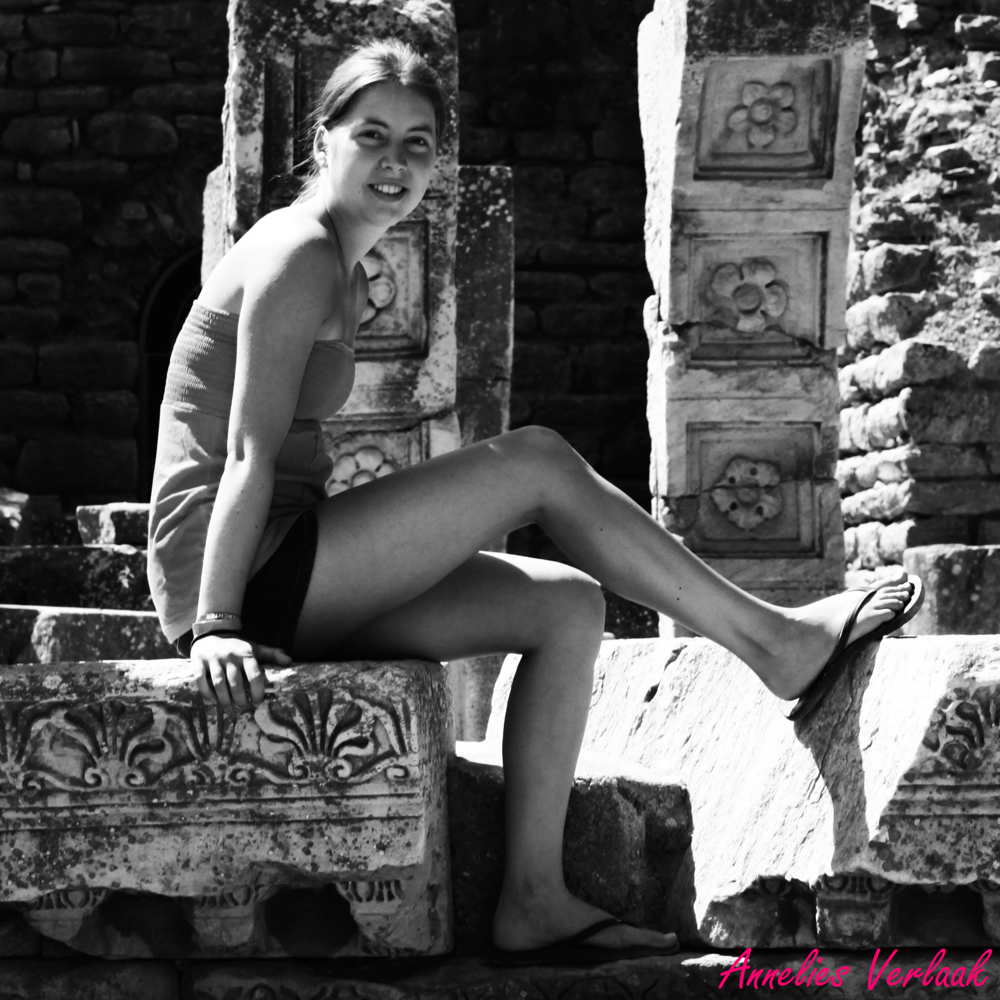

Annelies Verlaak
Wie ben ik?
Welkom op mijn website!
Mijn naam is Annelies Verlaak. Ik ben 20 jaar oud en ik zit in mijn laatste jaar Event- en projectmanagement aan de Katholieke Hogeschool van Leuven.
Mijn droom is om een echte eventmanager te worden en trouwfeesten, verjaardagen en eigenlijk zowat allerlei soorten themafeesten te organiseren. De vraag is alleen of ik daar al mee wil beginnen nadat ik afgestudeerd ben in juni.
Er zijn namelijk nog zoveel dingen die mij interesseren. De kans is dus groot dat ik na mijn studies Event- en projectmanagement nog ga verder studeren. Wat ik juist ga studeren, daar moet ik nog eens goed over nadenken.
Wat wel zo goed als vaststaat, is dat ik een cursus fotografie zal volgen. Vanaf september 2014 zou ik hier graag mee starten omdat ik over de jaren heen een liefde ontwikkeld heb voor fotografie.
Ik zit dus nog vol plannen die ik hopelijk beetje bij beetje kan realiseren.
De blogger in mij
Voor het vak 'Webdesign en desktoppublishing' heb ik niet alleen deze website moeten maken, maar ook een blog. Dezeblogis terug te vinden op Tumblr.
Elke week heb ik deze blog aangevuld met de theorie die we in de les van die week gezien hadden. Het was telkens opnieuw een hele opgave omdat er veel tijd kruipt in het schrijven van een blog.
Deze theorie is namelijk de leerstof voor het examen van 'Webdesign en desktoppublishing', dus het is van groot belang dat alle informatie die ik in mijn blog zet, correct is.
Het bloggen zelf kan nog wel leuk zijn, maar ik zou dit dan graag doen over thema's die ik zelf gekozen heb. Het thema dat mij het meeste interesseert is uiteraard fotografie.
Maar, om te bloggen moet je toch een zekere kennis hebben over het onderwerp waarover je spreekt en spijtig genoeg is mijn kennis over fotografie nog niet uitgebreid genoeg.
Wie weet verschijnt er volgend jaar wel een update op Tumblr. Als ik een cursus fotografie gevolgd heb tenminste...
Mijn liefde voor fotografie
Zoals ondertussen wel duidelijk is, is fotografie een passie van mij die ik vooral de laatste maanden verder ontwikkeld heb. Ik heb altijd graag foto's getrokken, maar net zoals de meesten had ik
een klein digitaal fototoestel. Daarmee kon ik wel leuke foto's trekken die leuk waren voor in het familiealbum, maar daar stopte het dan ook. Tot ik ongeveer twee jaar geleden het fototoestel
van mijn vader overkocht. Een bijna spiksplinternieuwe Canon EOS 500D.
Gaandeweg ontwikkelde mijn liefde voor fotografie zich verder. Daardoor ontdekte ik dat ik mijn fototoestel, na ondertussen twee jaar, nog altijd te weinig ken.
Dat is al een van de redenen waarom ik volgend jaar graag een cursus fotografie zou volgen. Een andere reden is dat ik mij ook meer professioneel op fotografie wil toeleggen,
niet alleen uw fototoestel goed kennen is daarbij van belang maar ook de omgeving goed kunnen inschatten en erop kunnen inspelen om de kwaliteit van de foto's optimaal te maken.
Zoals mijn website misschien al wat duidelijk maakt, hou ik vooral van zwart-wit foto's. Ik hoop daar dan ook mijn specialiteit van te maken de komende jaren. Om meer van mijn werk te bekijken,
kan je altijd naar de rubriek fotografie gaan. Daar bevinden zich verschillende foto's die ik zelf getrokken en bewerkt heb. Je hoeft geen kenner te zijn om te zien dat de uitvoering en bewerking
van de foto's vrij basic is, maar ik hoop gaandeweg te groeien en misschien hoor je over een aantal jaren nog wel van mij.